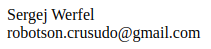

Stand 12.03.2023
Ich, Sergej Werfel, achte sehr auf die Wahrung meiner persönlicher Daten. Daher ist auch die App Fast Gallery Organizer (nachfolgend "die App") strikt nach dem Prinzip der Datensparsamkeit in Bezug auf persönliche Daten ausgelegt. Im Folgenden fasse ich zusammen, wie die App Daten verarbeitet und welche Daten wohin übertragen werden.

Bei Fragen, Anregungen oder Beschwerden kannst du mich unter den oben angegebenen E-Mail-Adresse erreichen.
Ich erhebe und verarbeite deine Daten ausschließlich dann, wenn die Verarbeitung gesetzlich erlaubt ist.
Wenn du die App aus dem Play Store herunterlädst, werden keine Daten von mir herunterladen und erhoben. Es ist möglich, dass das Play Store betimmte Daten, wie z.B. die Android-Version erhebt. Ich habe keinen Einfluss auf diese Datenübertragung. Ggf. stellt das Play Store einzelne dieser Daten mir zur Auswertung für die App zur Verfügung. Sollte ich diese Daten auswerten, dann nur in einer aggregierter Form ohne persönlichen Bezug. Nähere Informationen kannst du den Datenschutzhinweisen des Play Stores entnehmen.
Bei der App handelt es sich um eine Gallerie-App. Für ihre Funktion werden daher Fotos auf deinem Gerät gelesen, um sie dir anzuzeigen. Es folgt keine Auswertung der Bilder, die deine Persönlichkeitsrechte verletzen könnte. Erst recht werden keine Bilder irgendwohin übertragen.
Die App enthält die Option Fotos zu teilen. Dabei wird der Standardmechanismus des Android-Systems benutzt. Mit wem du die Fotos teilst und welche anderen Apps du dazu nutzst, unterliegt deiner Wahl und liegt somit außerhalb des App-Kontextes.
Um besser das Verhalten aller Nutzer verstehen zu können, verwende ich das Analyticstool Amplitude (von Amplitude, Inc.). Mit diesem Tool übertrage ich keine personenbezogenen Daten. D.h. bei der Auswertung der Daten weiß ich zu keinem Zeitpunkt, wer du bist. Diese im folgenen beschriebenen Daten werden ausschließlich dazu übertragen, um zu erkennen welche Funktionen wie gut benutzt werden. Dies ist notwendig, um die Funktionen bei der Weiterentwicklung der App zu priorisieren und die Benutzerfreundlichkeit zu steigern.
Bei den übertragenen Daten handelt es sich zum Einen um technische Informationen wie (Liste exemplarisch):
Zum Anderen wird inhaltlich übertragen (Liste exemplarisch):
Die App fordert folgende Berechtigungen an und nutzt sie für die nachfolgend dargestellten Zwecke:
Zugriff auf Dateien auf deinem Gerät: Um Bilder anzuzeigen und insbesondere löschen zu können, benötigt die App Zugriff auf die Daten deines Geräts. Andere Dateien als Bilder werden jedoch nicht verarbeitet (d.h. weder gelesen noch verarbeitet).
Internetzugriff: Die App verwendet den Internetzugriff, um ausschließlich die in 2.2.2 beschriebenen Analytics-Daten zu übertragen. Weitere Daten, insbesondere deine Bilder, werden nicht übertragen.